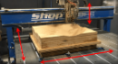
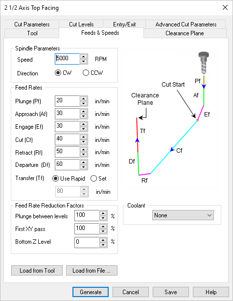
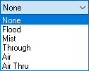
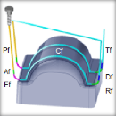
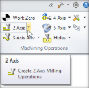

The following Feeds & Speeds tab is displayed for all Mill operations. It allows you to select the appropriate Feeds & Speeds for the current Mill operation. In this tab, Spindle Parameters and Feed Rates can be specified. Speeds & Feeds can also be loaded from a File or from the Tool.
Feed Rate is one of the most important factors to consider when implementing any CNC strategy. Simply put, feed rate is the speed at which the cutter engages the part and is typically measured in units/minute. Suggested cut feed rates will vary depending on the type of material you are cutting (i.e., aluminum, steel, wood, acrylic, etc.), the material of the cutter (carbide, high speed steel, ceramic, etc.) and many other cutting factors including desired surface and the characteristics of the CNC machine itself. |
 Dialog Box: Feeds & Speeds tab,2 Axis Drag Knife |
These parameters refer to the spindle on your machine. Spindle Speed This is the rotational Speed (S) of the milling spindle expressed in RPM. Spindle Direction (CW) This sets the spindle rotation to be Clockwise (CW). Spindle Direction (CCW) This sets the spindle rotation Direction to be Counter Clockwise (CCW). |
These are the feedrates (in Units/Min) that will be applied to the current toolpath operation. If the values are currently populated from your Tool definition (Load from Tool), Feeds & Speeds table (Load from File) or from your Knowledge Base, you can override them for this operation. Plunge (Pf) This is the rate is the feed before the tool starts to engage in material. This is always vertical. Approach (Af) This is the Approach (Af) feedrate (in Units/Min) used to prepare the cutter just before it starts to Engage into material for cutting. Approach motions are dependent on the method of machining. Engage (Ef) This is the Engage (Ef) feedrate (in Units/Min) used when the tool is Engaging the material just prior to cutting. Cut (Cf) This is the Cut (Cf) feedrate (in Units/Min) used when the tool is Cutting material. Retract (Rf) This is the Retract (Rf) feedrate (in Units/Min), when the tool is performing a Retract move away from material. Departure (Df) The is the feedrate (in Units/Min), when the tool Departs from the material. Transfer (Tf) Use Rapid This is the Transfer (Tf) feedrate (in Units/Min) used for Transfer motions. If you select Use Rapid the posted G-Code will output a rapid motion (G0) with no feed rate. Note: For more accurate machining time estimates, use the Set option and enter the feed rate to use. Transfer (Tf) Set This is the Transfer (Tf) feedrate (in Units/Min) used for Transfer motions. Select Set to enter an actual feedrate value for rapid motions (G0). This is only used for calculating the estimated machining time. |
This section of the dialog allows you to specify Feed Rate Reduction Factors for specific tool motions. Plunge between levels This is a percentage of the Cut (Cf) feedrate to use when the tool is plunging between Z levels. First XY Pass This is a percentage of the Cut (Cf) feedrate to use on the first XY cut motion when the toolpath uses the full width of the cutter. |
Here you can override the Coolant that is specified by the Tool. Coolant can be set to Flood, Mist, Through or Air Through. Coolant codes are defined in the post processor generator under Misc tab. Coolant Off is also supported as a variable that can be added where needed using the post-processor generator.  Coolant selections available |
Load the Feed & Speeds values that are saved with the currently selected Tool. See: Create/Edit Tools |
This loads the Feeds & Speeds values from the Feeds & Speeds Table file. This will display the Load Feeds from Table dialog box to make your selections.
|

Did you know that MecSoft’s MILL Module plug-ins have a built-in Feeds & Speeds Calculator? That’s right, you can ask the program to suggest feeds & speeds values based on your current stock material and active tool parameters! Once a Cut Feed is calculated, you can then choose to automatically assign feed rate values for the various toolpath motions in your operation including Plunge, Approach, Engage, Retract and Departure! The percentages of the Cut Feed to assign are all controlled from the CAM Preferences dialog. The Milling Feeds & Speeds Calculator... |
MILL module allows you to customize the feeds and speeds based on the stock material being machined, the material of the cutter employed and also the operation type. This is done by archiving your desired feeds and speeds settings in an external data file. A default implementation of this table has been included with the VisualCAM product and can be found in a folder called "Materials" under the product installation directory. This xml contains the list of materials, texture, feeds and speeds. The file is located under Materials folder in the VisualCAM install directory. (C:\ProgramData\MecSoft Corporation\VisualCAM 2024\Materials). Materials folder contains the following files •FeedsSpeedsDataINCH.xml •FeedsSpeedsDataMM.xml The Feeds and speeds file is an .xml file format, which can be edited using any text editor to add newer materials. These values can then be recalled at any time to compute the feeds/speeds to be used in the current program. The format for this file is shown below.
An example entry is shown below.
|
Note: This blog post is intended for advanced users who are familiar with XML text editing and have administrative access to their Windows Operating System. MecSoft’s CAM plug-ins have a built-in Feeds & Speeds Calculator that can suggest Spindle Speeds and Cut Feed Rates based on your stock material and active tool parameters! However, what if you are cutting stock material that is currently not in our Materials Library? Or what if you don’t like what is currently assigned for the material of your choice in the Materials Library? This post will show you how to customize MecSoft CAM to add and manage multiple material files as well to add your own stock materials. If you are new to MecSoft’s CAM plug-ins, you can review my earlier post on the Feeds & Speeds Calculator and how it works. |